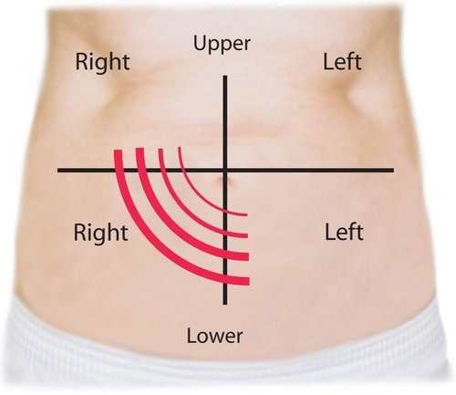
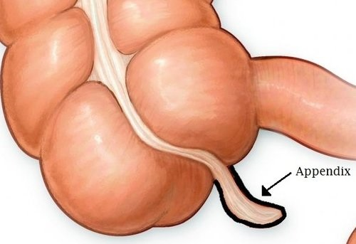

Appendectomy
SUMMARY
Appendectomy involves the open or laparoscopic removal of the appendix. This operation is performed to remove an infected or inflamed...
INFORMATION
The appendix is a small organ which attaches near where the large and small intestines meet. A healthy appendix has a thin tubular shape and...
PREPARATION & CARE
Appendectomy is usually an emergency procedure, therefore there is little patient preparation required. It is important to ensure...